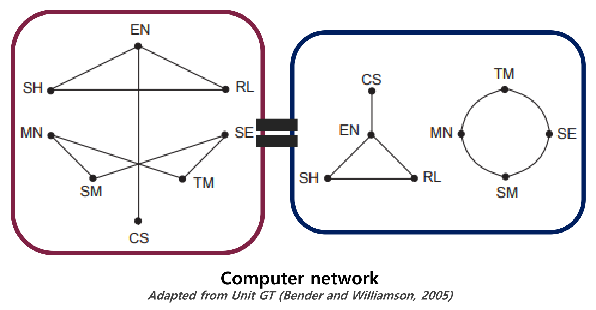
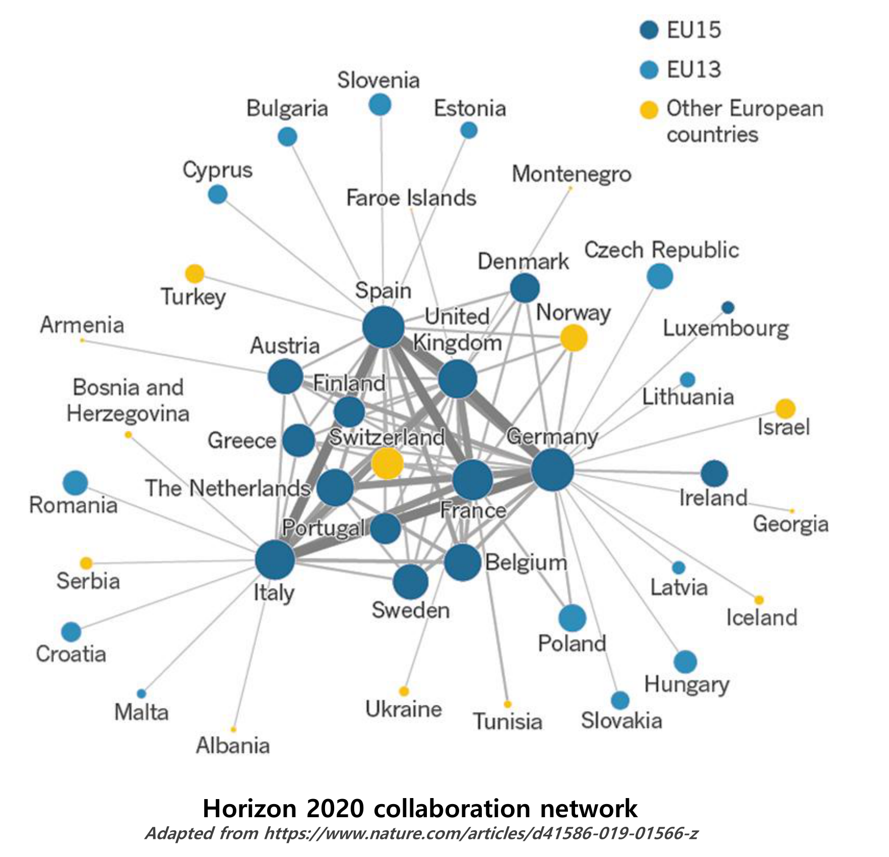
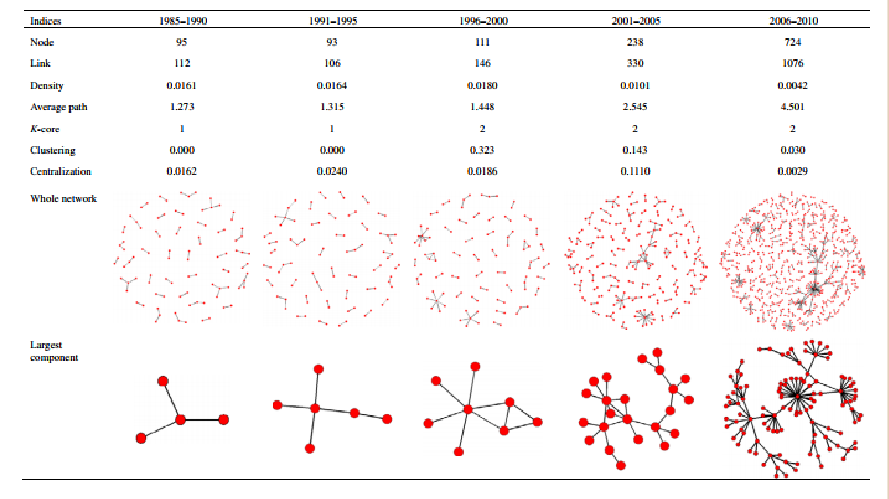
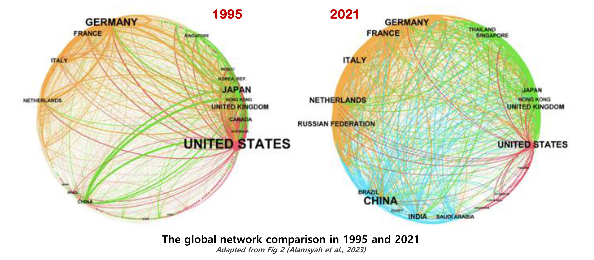
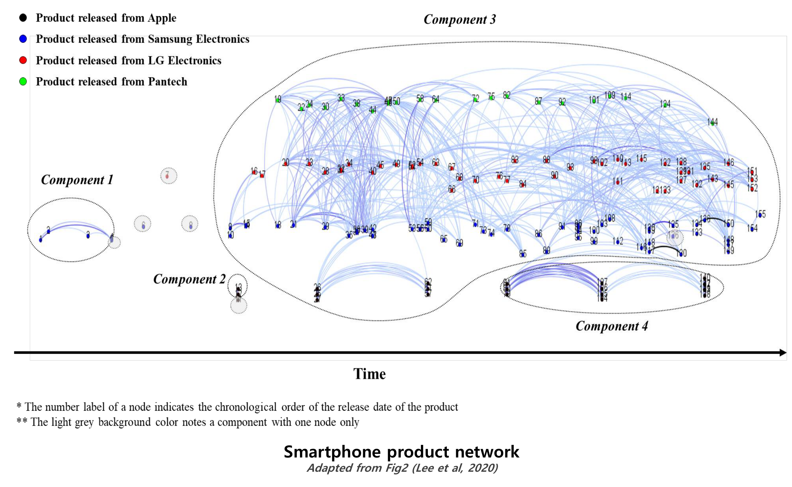

본 포스트는 서울대학교 Woolrim Lee 강사님의 Social Networks in Internet-Based ICT 강의 자료(1강 Brief Overview of SNA, 2026년 9월 4일)를 바탕으로, 사회연결망분석을 처음 접하는 독자도 논리적 흐름을 따라갈 수 있도록 재구성한 것입니다. 강의 운영 안내(강의 목표·평가 방식·주차별 일정 등)에 해당하는 앞부분은 제외하고, SNA 개관에 해당하는 내용만 정리했습니다.
한 줄 요약 (TL;DR)
“분석의 단위를 ’개인’이 아니라 ’개인들 사이의 관계’로 옮긴다.”
전통적인 사회 연구는 개인의 행동과 특성에 초점을 맞추면서, 정작 그 행동이 놓여 있는 사회적 구조 — 개인들이 서로 상호작용하는 방식과 서로에게 미치는 영향 — 를 분석에서 빠뜨려 왔습니다. 사회연결망분석(social network analysis, SNA)은 이 빠진 자리를 정면으로 다루는 구조적 접근(structural approach)입니다.
핵심 이동은 두 가지입니다. 첫째, 관찰 대상을 행위자(actor)의 속성에서 행위자들 사이의 관계(relationship)로 옮깁니다. 둘째, 그 관계망을 그래프로 표현함으로써 “누가 참여하고 있는가 · 어떻게 연결되어 있는가 · 누가 얼마나 영향력이 큰가 · 전체 구조는 어떤 모양인가”를 측정 가능한 대상으로 만듭니다.
그리고 이 관점은 사람 사이의 관계에만 갇히지 않습니다. 노드가 컴퓨터든, 국가든, 기업이든, 스마트폰 모델이든 “연결되어 있는 무언가의 집합”이기만 하면 같은 도구가 그대로 작동합니다. 이번 강의는 그 확장 가능성을 다섯 개의 실제 사례로 확인하며, 마지막에 네트워크는 시스템을 추상화한 단순화된 표현이며 그 과정에서 많은 정보가 소실된다는 한계를 함께 못 박습니다.
3. 왜, 언제 SNA를 사용하는가 (Why and When We Use SNA?)
앞 절이 “SNA란 무엇인가”였다면, 이 절은 “그래서 언제 쓰는가”입니다. 내용은 Rescue.org의 Social Network Analysis 자료에 기반합니다.
3.1 소셜 네트워크는 사람이 연결된 곳이라면 어디에나 존재한다
- 조직(organizations) 안에서, 커뮤니티(communities) 안에서, 고객과 서비스 제공자 사이에서
- 시장(markets) 안에서, 심지어 갈등하는 당사자들 내부와 그들 사이에서도
“소셜 네트워크는 어떤 유형의 관계로 연결된 다수의 행위자들로 이루어진다(Social network is made up of a number of actors who are connected by some type of relationship)!”
1.1절의 정의에서 비어 있던 두 괄호가 여기서 행위자(actors)와 어떤 유형의 관계(some type of relationship)로 채워집니다. 이 문장이 이번 강의의 조작적 정의 역할을 합니다.
3.2 SNA는 무엇을 하는 과정인가
SNA는 다음 두 과정으로 규정됩니다.
- 관계를 지도로 그리는(mapping relationships) 과정
- 네트워크의 구조와 다른 행위자들의 영향력을 분석하는 과정
앞이 측정·표현의 단계라면 뒤는 분석의 단계입니다. 관계를 먼저 그래프로 옮겨 놓아야(1.4절의 시각화) 비로소 구조와 영향력을 따질 수 있다는 순서가 여기 담겨 있습니다.
3.3 SNA로 무엇을 더 잘 이해할 수 있는가
SNA는 다음을 더 잘 이해하는 데 유용합니다.
| 질문 | 분석 수준 |
|---|---|
| 어떤 행위자들이 네트워크에 참여하고 있는가 | 노드 |
| 그들이 어떻게 연결되어 있는가 | 링크 |
| 각 행위자가 얼마나 영향력이 큰가 | 노드 수준 지표(중심성) |
| 네트워크가 어떻게 구조화되어 있는가 | 네트워크 전체 수준 지표 |
- 위 네 질문은 각각 뒤 회차의 주제와 정확히 대응합니다. 셋째 질문이 Network Measures로, 넷째 질문이 Network Models로 이어집니다.
- 바로 다음 4절의 다섯 사례는 이 네 질문이 서로 다른 대상 위에서 어떻게 구체화되는지를 보여 주는 전시장입니다.
4. 몇 가지 사례 (Some Examples)
다섯 개의 사례를 봅니다. 각 사례를 읽을 때 ① 노드는 무엇인가 ② 링크는 무엇인가 ③ 이 그림으로 어떤 질문에 답하려 하는가를 따라가면 좋습니다.
4.1 컴퓨터 네트워크 (Computer Network)
- 연구 질문: 컴퓨터 A에서 컴퓨터 B로, 가능한 한 적은 수의 중간 컴퓨터를 거쳐 메시지를 보내려면 어떻게 해야 하는가?
- 접근: ⇒ 서로 연결된 컴퓨터 쌍(pairs)들의 목록을 만듭니다. 이 “연결된 쌍의 목록”이 곧 링크 집합이며, 그래프로 문제를 옮기는 첫 단계입니다.
- 노드: 컴퓨터. 라벨이 붙은 점(dots)으로 표시하며, 각 라벨은 그 컴퓨터 소유자 이름의 머리글자입니다.
- 링크: 컴퓨터 사이의 연결. 선(lines)으로 표시합니다.

강의 자료는 이 그림 위에서 구체적인 문제를 냅니다.
- 컴퓨터 A가 CS이고 B가 RL이라고 하면, 가능한 경로가 두 가지 있습니다.
- 그림에서 읽어 보면 하나는 CS → EN → RL이고, 다른 하나는 CS → EN → SH → RL입니다.
- 어느 쪽이 가장 적게 거치는 길인가? 중간 컴퓨터가 EN 하나뿐인 CS → EN → RL이 답입니다.
이 예시에는 사람도, 사회도, “소셜”한 요소가 전혀 없습니다. 그럼에도 노드 · 링크 · 경로라는 도구가 그대로 작동하며, “가장 적게 거치는 길”이라는 질문은 뒤에서 배울 최단 경로(shortest path)와 평균 경로 길이(average path length) 개념의 원형입니다. 2.2절의 “인간 관계에 국한되지 않는다”는 주장이 실제로 어떤 모습인지를 가장 앙상한 형태로 보여 주는 사례입니다.
4.2 협력 네트워크 (Collaboration Network)
- 연구 질문: Horizon 2020에서 최상위 네트워커는 누구인가?
- 노드 크기를 통해 한 참여자가 얼마나 영향력이 있는지를 알 수 있습니다.
- 링크의 굵기를 통해 협력의 횟수를 알 수 있습니다.

4.3 R&D 협력 네트워크 (R&D Collaboration Network)
- 연구 질문: R&D 네트워크의 협력 구조는 시간에 따라 어떻게 변하는가?
- 노드: 기업, 대학, 연구기관
- 링크: R&D 협력
- 분석 대상: 1985–2010년 기간 동안 협력 네트워크의 구조적 변화

그림 상단의 지표 표를 옮기면 다음과 같습니다.
| Indices | 1985–1990 | 1991–1995 | 1996–2000 | 2001–2005 | 2006–2010 |
|---|---|---|---|---|---|
| Node | 95 | 93 | 111 | 238 | 724 |
| Link | 112 | 106 | 146 | 330 | 1076 |
| Density | 0.0161 | 0.0164 | 0.0180 | 0.0101 | 0.0042 |
| Average path | 1.273 | 1.315 | 1.448 | 2.545 | 4.501 |
| K-core | 1 | 1 | 2 | 2 | 2 |
| Clustering | 0.000 | 0.000 | 0.323 | 0.143 | 0.030 |
| Centralization | 0.0162 | 0.0240 | 0.0186 | 0.1110 | 0.0029 |
각 지표의 정식 정의는 Network Measures 회차에서 다루지만, 표를 읽기 위한 최소한의 뜻만 미리 적어 둡니다. 모두 표준적인 정의입니다.
- Density(밀도): 실제 링크 수를 가능한 최대 링크 수로 나눈 값
- Average path(평균 경로 길이): 연결된 노드 쌍들 사이 최단 경로 길이의 평균
- K-core: 모든 노드가 최소 \(k\)개의 이웃을 갖도록 남긴 최대 부분그래프에서의 \(k\)
- Clustering(군집계수): 한 노드의 이웃들끼리도 서로 연결되어 있는 정도
- Centralization(중심화): 네트워크 전체의 연결이 소수 노드에 집중된 정도
표에서 눈으로 확인되는 것들을 정리하면 다음과 같습니다.
- 규모는 크게 늘었습니다. 노드는 95개에서 724개로, 링크는 112개에서 1,076개로 증가했습니다.
- 그럼에도 밀도는 오히려 떨어졌습니다(0.0161 → 0.0042). 가능한 노드 쌍의 수가 노드 수의 제곱에 비례해 늘어나므로, 링크가 약 10배 늘어도 분모가 훨씬 빠르게 커지기 때문입니다.
- 평균 경로 길이는 1.273에서 4.501로 길어졌습니다. 초기에는 대부분의 연결이 서로 떨어진 짝 단위여서 “연결된 두 노드는 거의 항상 직접 이웃”이었지만, 후기에는 여러 단계를 거쳐야 닿는 큰 구조가 형성되었음을 뜻합니다.
- 군집계수는 1996–2000년에 0.323으로 정점을 찍은 뒤 0.030까지 떨어지고, 중심화는 2001–2005년에 0.1110으로 정점을 찍은 뒤 0.0029로 떨어집니다. 즉 구조 변화가 단조롭게 한 방향으로만 진행되지 않았다는 점이 이 표의 특징입니다.
4.4 글로벌 무역 네트워크 (Global Trade Network)
- 연구 질문: 글로벌 무역 네트워크의 구조는 어떻게 변하는가?
- 노드: 국가 / 색: 군집(cluster)
- 링크: 국가 간 수출입 무역 활동

4.5 제품 네트워크 (Product Network)
- 연구 질문: 제품 수준에서 제품의 진화를 어떻게 기술할 수 있는가?
- 노드: 하나의 스마트폰 모델
- 링크: 서로 다른 두 스마트폰 모델 사이의 유사도(similarity)

| 사례 | 노드 | 링크 | 던지는 질문 |
|---|---|---|---|
| 컴퓨터 네트워크 | 컴퓨터 | 물리적 연결 | 최소 몇 단계로 메시지가 가는가 |
| 협력 네트워크 | 국가 | Horizon 2020 공동 참여 | 누가 가장 영향력 있는 참여자인가 |
| R&D 협력 네트워크 | 기업·대학·연구기관 | R&D 협력 | 구조가 시간에 따라 어떻게 변하는가 |
| 글로벌 무역 네트워크 | 국가 | 수출입 무역 활동 | 군집 구조가 어떻게 재편되는가 |
| 제품 네트워크 | 스마트폰 모델 | 모델 간 유사도 | 제품은 어떻게 진화하는가 |
노드와 링크의 정체는 사례마다 전혀 다르지만, 던지는 질문의 형태는 3.3절의 네 질문에서 벗어나지 않습니다.
5. 마치기 전에 (Before End…)
5.1 함께 볼 자료
강의 자료는 Nicholas Christakis의 TED 강연 두 편을 참고 자료로 제시합니다.
5.2 네트워크에서 무엇을 배울 수 있는가
- 시스템의 각 부분 사이의 상호작용 패턴을 포착할 수 있습니다.
- 그럼으로써 시스템이 어떻게 작동하는지를 이해할 수 있습니다.
5.3 네트워크는 단순화된 표현이다
- 네트워크는 시스템을 추상적인 구조 혹은 위상(topology)으로 환원한 것입니다.
- 그 환원 과정에서 통상 많은 정보가 소실됩니다.
바로 앞 절까지 SNA가 무엇을 볼 수 있게 해 주는지를 이야기했다면, 이 마지막 항목은 무엇을 못 보게 만드는지를 말합니다. 노드와 링크로 옮기는 순간 행위자의 속성, 관계의 맥락과 강도, 시간적 순서 등 그래프에 담기지 않은 정보는 사라집니다.
따라서 1.3절의 질문 — “내 링크는 어떤 관계인가” — 는 형식적인 절차가 아니라, 무엇을 버리고 무엇을 남길지 결정하는 연구 설계의 핵심입니다. 이번 강의가 정의에서 시작해 다섯 사례를 거쳐 이 경고로 끝나는 구성 자체가, 네트워크를 도구로 쓸 때 지켜야 할 태도를 보여 줍니다.
정리하며 (Closing Remarks)
이번 강의의 논리 사슬을 한 장으로 요약하면 다음과 같습니다.
| 단계 | 내용 | 근거 |
|---|---|---|
| ① 구성 요소 정의 | 네트워크 = 어떤 관계로 연결된 무언가의 집합. 노드는 “연결될 수 있는 어떤 단위”든 가능 | §1.1–1.2 |
| ② 링크의 유형화 | “연결”은 유사성 · 사회적 관계 · 상호작용 · 흐름의 네 범주로 나뉘며, 무엇을 링크로 택하느냐가 네트워크를 결정 | §1.3 (Borgatti et al., 2009) |
| ③ 표현 수단 확보 | 관계를 그래프로 옮기면 노드 크기 · 링크 종류라는 추가 차원에 데이터를 실을 수 있음 | §1.4 |
| ④ 관점 전환 | 전통적 접근이 간과한 상호작용과 상호 영향이야말로 사회 세계의 일차적 구성 요소 ⇒ 구조적 접근 | §2.1–2.2 (Furht, 2010) |
| ⑤ 분석 대상 확정 | SNA = 관계를 지도로 그리는 과정 + 구조와 영향력을 분석하는 과정. 참여자 · 연결 방식 · 영향력 · 전체 구조의 네 질문 | §3.1–3.3 |
| ⑥ 적용 범위 확인 | 컴퓨터 · 국가 · 기업 · 제품 등 대상이 달라도 동일한 도구와 동일한 네 질문이 작동 | §4.1–4.5 |
| ⑦ 한계 명시 | 네트워크는 시스템을 위상으로 환원한 단순화된 표현이며, 그 과정에서 많은 정보가 소실됨 | §5.3 |